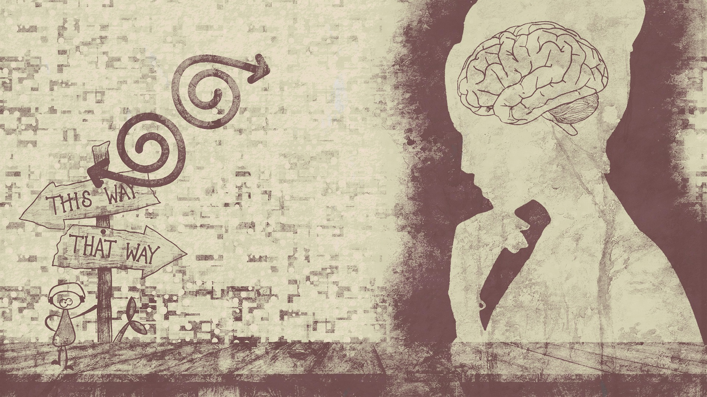

Why is Philosophy so important?
Philosophy or the study of fundamental questions about life is one of the reasons why we have laws and morals. Those certain knowledges are the reason why we learn whats good and whats not
Philosophy teaches us how to think, not how to think. Usually when we make various decisions, especially ones where we have to use critical thinking along. When we think we usually use moral compasses, logical predictions, and many other devices that are too much to mention.

Philosophy can also be used to encourage people to "think outside the box" meaning that they are gonna try and use their own wisdom to that does not only solve problems (at times) but it can also be used to improve techniques that are either invented or discovered. Philosophy can also help you understand the problem since you are trying to deduct every reason or factor that is involved. If you can not fix nor solve the problem, you can at least prevent it from happening in the future.
Philosophy is very important to preserved for a variety of reasons. The main reason is that it can help people mentally and logically. We use it to make decisions and figure out how to be a good or better person. As I said before, we philosophize in order to figure out whats good or not for reasons no one can comprehend. Things just feel wrong, and the wrong things can make people very uncomfortable.
Philosophy has been with us since democracy was invented. Socrates, one of the many founders of western Philosophy, used philosophy to make good citizens that would aim for a "good city." Philosophy has invented many good tools in the west like good social theories, science and logic, the concept of ethics, and many political stances.
Those are the basic reasons why Philosophy is, and will always be important today, because it forms the civilization we have today.